Watch Events & Trade Shows 2026
In this post, we will take a look at some of the most exciting events happening in the watch world, so you can stay up-to-date and make the most of your time in the community.
 Nenad Pantelic • January 16, 2026
Nenad Pantelic • January 16, 2026
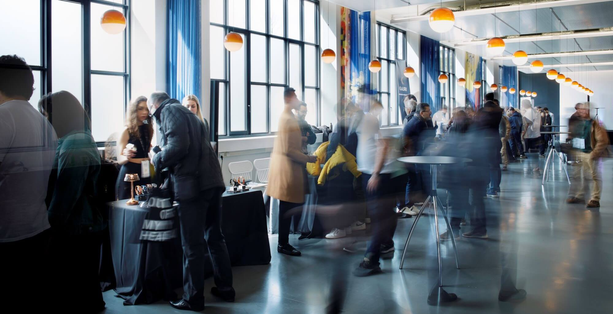
If you are a fan of watches, then you know that keeping up with the latest events and happenings in the community can sometimes be a challenge.
I personally struggle to find one place to read about the latest fairs, networking opportunities, educational seminars, or meetups to connect with like-minded enthusiasts.
In this post, we will take a look at some of the most exciting events happening in the watch world, so you can stay up-to-date and make the most of your time in the community.
To make things easier, we have ordered the events by date so you can quickly find what is happening in the coming weeks and months.
LVMH Watch Week
Date: 19-21 January 2026
Website: www.lvmh.com
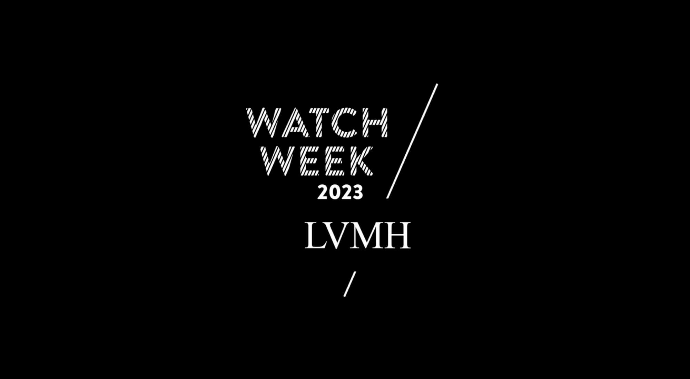
LVMH Watch Week is an annual event organized by luxury goods conglomerate LVMH Moët Hennessy Louis Vuitton that showcases the latest timepieces from its prestigious watch brands, including TAG Heuer, Zenith, Hublot, and Bulgari.
The private event, held in January, is exclusive to press, retailers, and VIP clients and provides a platform for these brands to showcase new products, innovations, and designs and connect with industry professionals, watch enthusiasts, and media.
The event is highly anticipated by collectors, journalists, and industry insiders and is an important event in the watch industry calendar.
British Watchmakers’ Day
Date: 7 March 2026
Website: britishwatchmakers.com
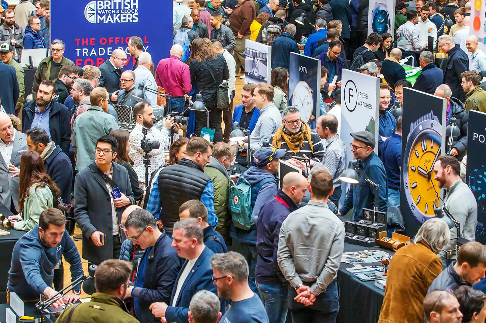
British Watchmakers' Day is an annual event that celebrates and showcases the work of British watch and clockmakers.
The event brings together over 40 British watch brands, from established names to up-and-coming independents.
It is a great opportunity for watch enthusiasts to see the latest creations from British watchmakers, learn more about the products, and meet the people behind the brands.
Watches and Wonders
Date: 14-20 April 2026
Website: watchesandwonders.com
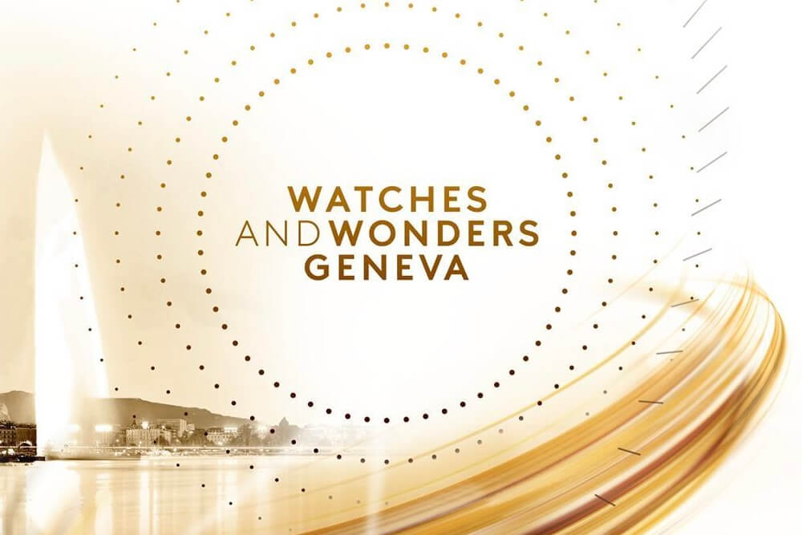
Watches and Wonders is an annual watch exhibition event that showcases new timepieces from luxury watch brands. The event was originally held in Geneva, Switzerland, under the name Salon International de la Haute Horlogerie (SIHH), but it was rebranded as Watches and Wonders in 2020.
The event features previews and launches of new collections, presentations, and discussions with industry leaders and experts. Watches and Wonders provides an opportunity for watch enthusiasts, collectors, and industry professionals to stay up-to-date on the latest trends and developments in the luxury watch market.
Time to Watches
Date: 14-19 April 2026
Website: timetowatches.com
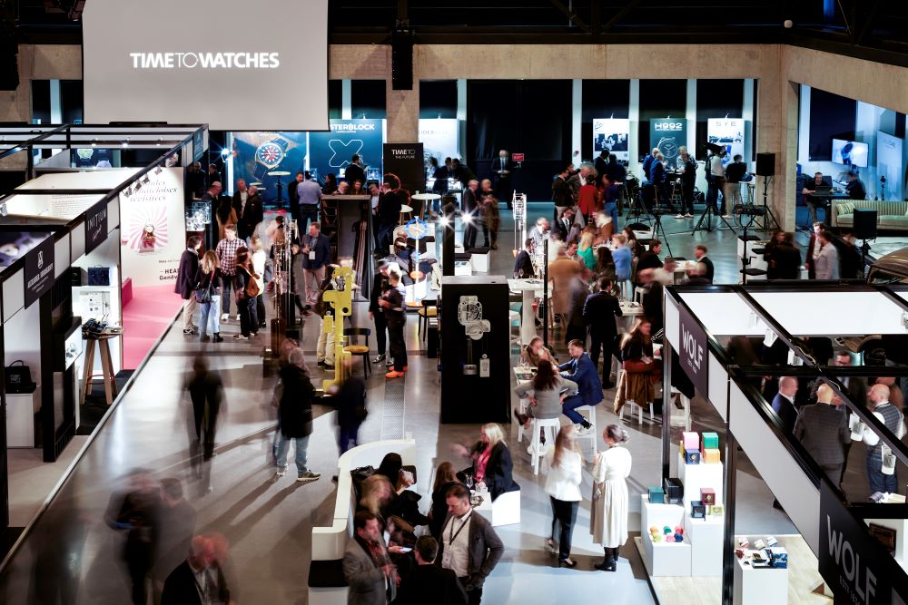
Time to Watches is an event that allows various types of watch brands, including historical, new, fashion, CPO, and smartwatches, to connect with their audiences and achieve their promotional and sales goals.
The event highlights that they create a relaxed and inclusive environment for brands to exchange ideas and create connections with the public. Experience, dialogue, and contact are considered crucial in conveying emotions and attracting customers.
Vancouver Timepiece Show
Date: 24-26 April 2026
Website: www.timepieceshow.com
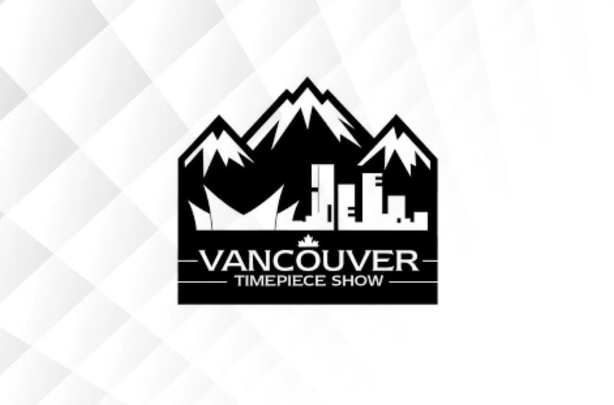
The Vancouver Timepiece Show is an upcoming event for watch enthusiasts, collectors, and anyone curious about horology. Organized by the team behind the Toronto Timepiece Show, it will showcase over 40 watch brands.
Attendees can expect to see everything from established names like Oris and Fears to independent makers like Atelier Wen and Studio Underd0g. The show provides a unique opportunity to explore a variety of watches, engage with watchmakers, and discover new brands.
Toronto Timepiece Show
Date: 26-27 September 2026
Location: The Meridian Arts Centre, Toronto, Canada
Website: timepieceshow.com/toronto
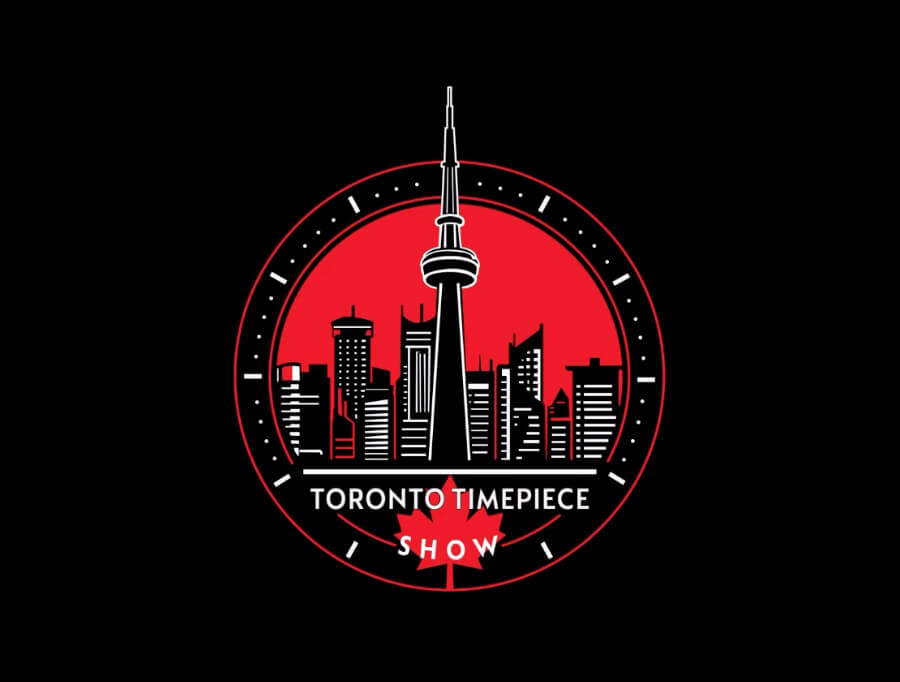
The Toronto Timepiece Show is the original show from the team that later added Vancouver and Montréal. It runs over two public days at the Meridian Arts Centre and brings together more than 80 brands.
The line-up mixes bigger names like Doxa, Nomos, Oris, Sinn and Mühle Glashütte with independents and Canadian makers such as Wilk Watchworks, Ferro & Company and Marathon. There is also a section for artisanal watchmakers, with names like Grönefeld, J.N. Shapiro and Charles Simon showing their work.
Windup Watch Fair
Dallas: 13-15 March 2026
San Francisco: 1-3 May 2026
Chicago: 10-12 July 2026
New York: 16-18 October
Website: windupwatchfair.com
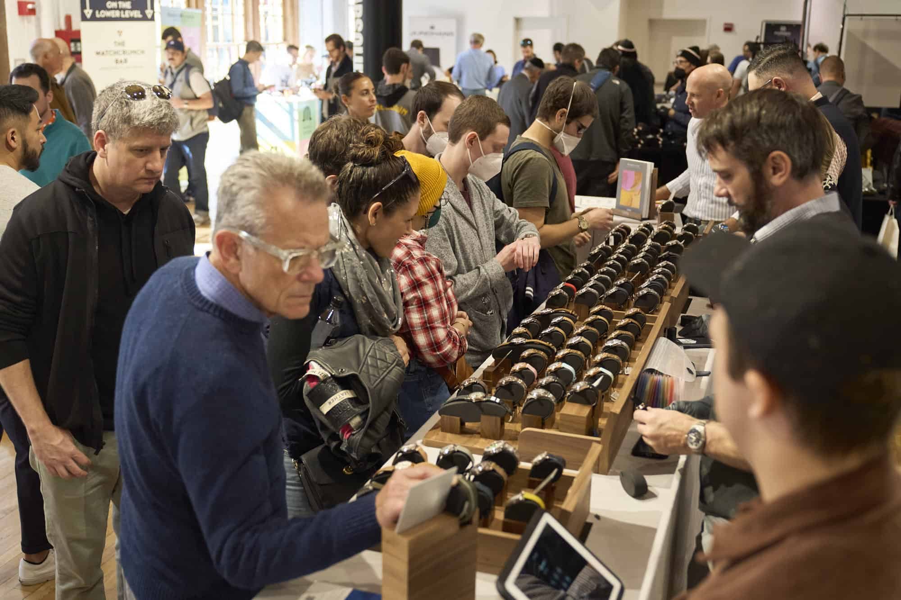
The Windup Watch Fair is an annual three-day shopping event held in San Francisco, Chicago, and New York City. It aims to connect watch brands with customers of all levels of expertise in a fun and engaging environment.
The event is free and open to the public, and it is the most popular consumer watch event in America. Watch enthusiasts, whether experienced collectors or first-time buyers, are encouraged to attend and browse the latest watch offerings.
WatchIt! Watch Fair
Date: 20 June 2026
Location: voco St. John's Hotel, Solihull, Birmingham, UK
Website: watchitfair.com
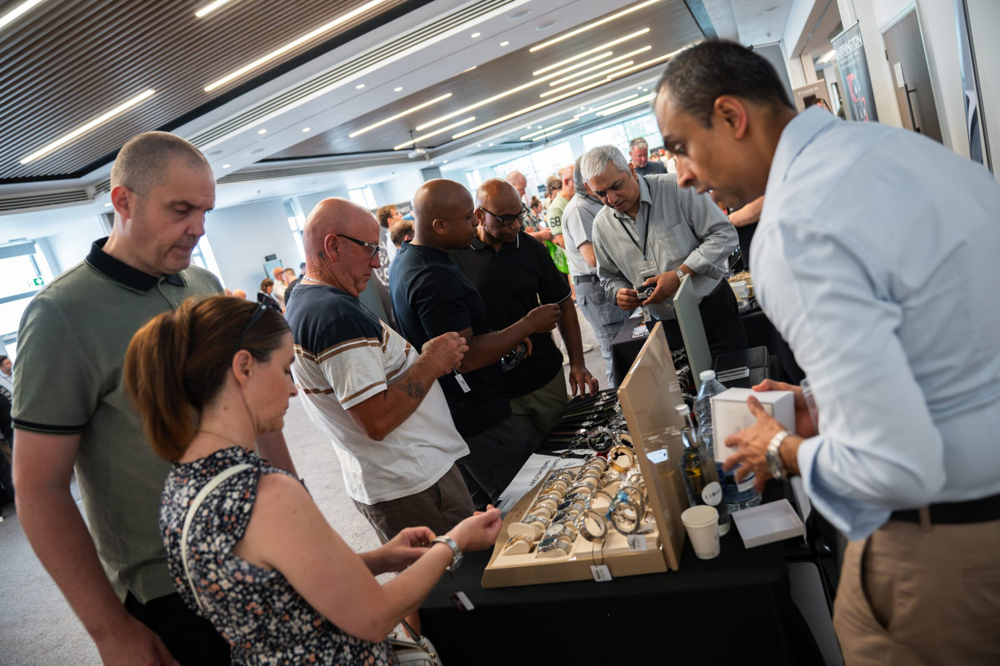
WatchIt! Watch Fair is a no-nonsense, hands-on watch event for real enthusiasts and watch lovers in the Midlands, UK. Born from a simple idea to bring together passionate watch lovers and independent brands in a space that's friendly, affordable, and accessible to everyone.
Arranged and hosted by Joshua Clare-Flagg from 12&60, the fair stands for honesty, enthusiasm, accessibility, and a healthy appreciation for good design. With no commercial pressure, just a genuine passion for horology, the event reaches over 1,000 engaged enthusiasts eager to try on watches they've only seen on Instagram.
Intersect Watch Events
NYC: 28 February 2026
Long Beach: 17-18 July 2026
Charlotte: 18-19 September 2026
Austin: 6-7 November 2026
Website: intersectwatchshow.com
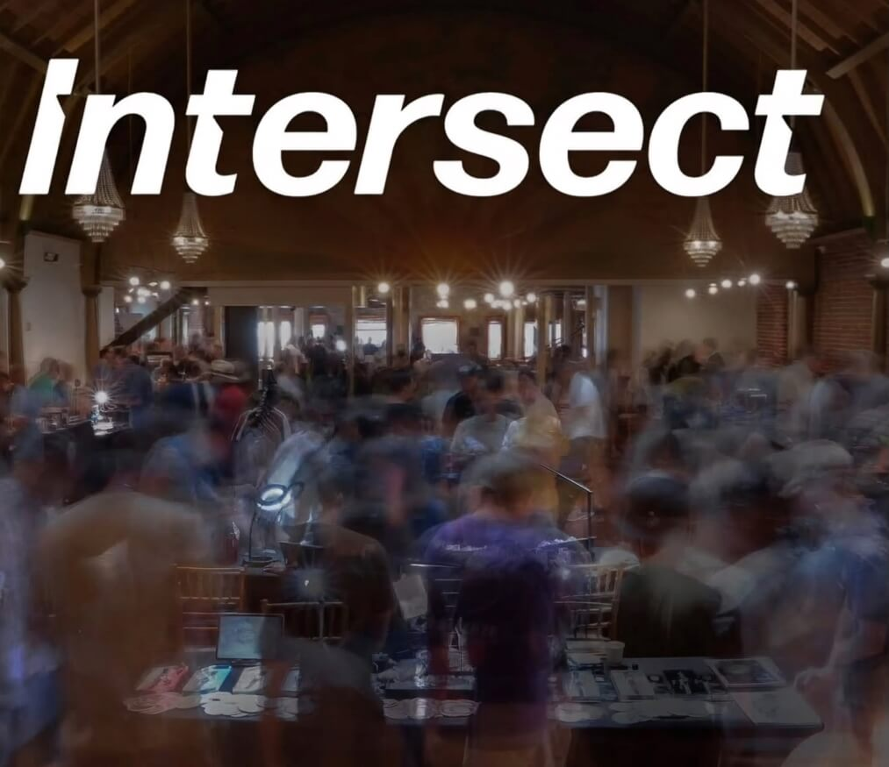
Intersect is a collaborative exhibition celebrating independent watchmaking. Founded in 2021 in Los Angeles, their vision is to inspire, educate, and ignite enthusiasm by creating an immersive and welcoming environment.
They bring independent brands and enthusiasts together for a unique opportunity to try on watches, discover new creators, and connect with the community. Events are organized and managed by Markus Wälchli (Formex), Wesley Kwok (Nodus), and Peter Cho (Jack Mason).
WatchCrunch meetups
Date: more details soon
Website: watchcrunch.com/meetups
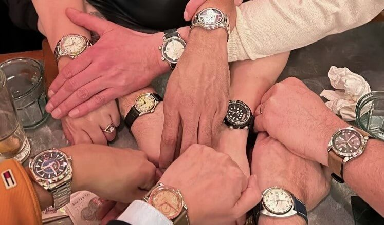
WatchCrunch is an online community that provides a platform for watch enthusiasts to discuss and share their passion for watches in a fun and welcoming atmosphere. They also organize in-person meetups for members to connect, share their knowledge, and learn from each other.
Geneva Watch Days
Date: 1-5 September 2026
Website: gva-watch-days.com
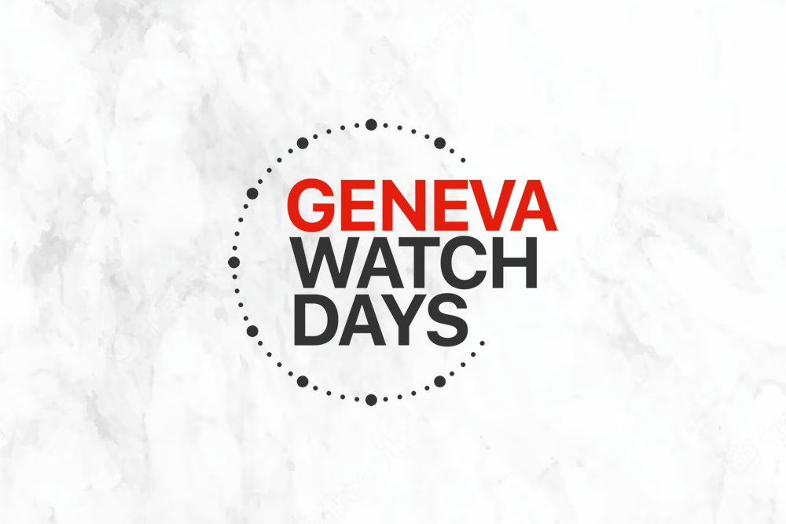
Geneva Watch Days is a collaborative and independent industry salon founded in 2020. It focuses on cooperation and simplicity, providing a platform for watchmakers to showcase their latest creations. The event is held in partnership with the État de Geneve and the City of Geneva, catering to retailers, media, and the general public.
With around 40 watch brands participating, the exhibition takes place at the Rotonde du Mont-Blanc pavilion and various locations across the city.
Bangkok Watch Week
Date: 22-27 September 2026
Location: Siam Paragon, Bangkok, Thailand
Website: siamparagon.co.th
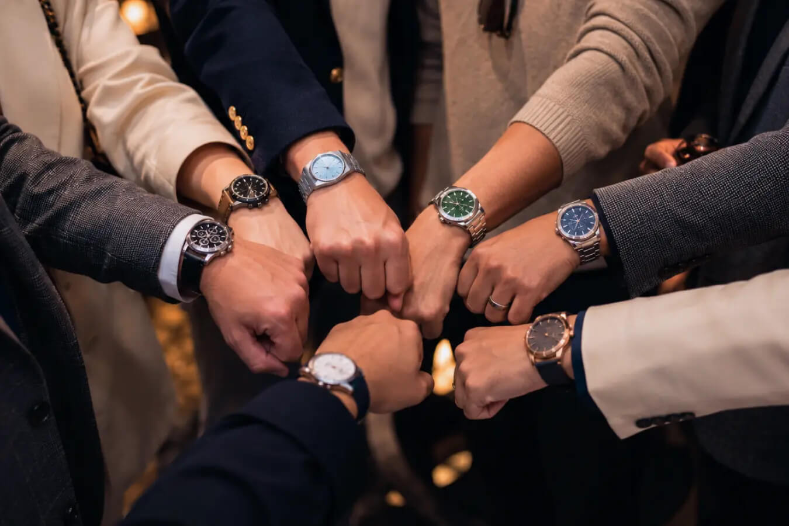
Bangkok Watch Week is hosted by the Siam Paragon mall and ran its second edition in 2026, bigger than the first. More than 45 brands take part, from Cartier, Chopard, Grand Seiko, IWC, Jaeger-LeCoultre, Panerai, Piaget and Vacheron Constantin to independents like MB&F and Greubel Forsey.
Across the week there are 14 sessions led by brand founders, CEOs and master watchmakers, plus hands-on activities in the FHH Academy Lounge. Pascal Ravessoud, vice-president of the Fondation de la Haute Horlogerie, is among the speakers.
World Time UK - The London Watch Event
Date: 25 January 2026
Website: worldtimeuk.com
The London Watch Event started in 2017 but its origins go back to the creation of the Diver's Watches Facebook Group in 2011, which now has over 71,000 members. The group organised get-togethers around the world to give members the opportunity to meet in person.
The The London Watch Event has grown in size each year. The venue is near the Heathrow Terminal 5, which is easily accessible for local and international visitors.
P-Day (Paneristi Yearly Event)
Date: 10 October 2026
Location: Geneva, Switzerland
Website: paneristi.com
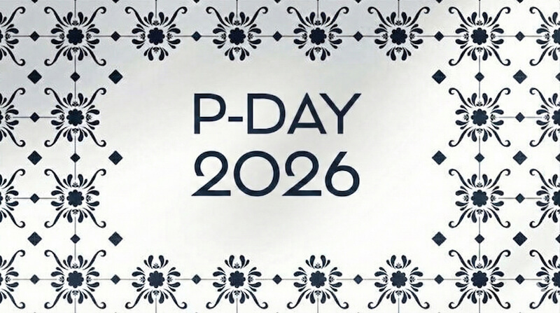
The Paneristi Anniversary Event (P-Day) is an annual gathering of fans of luxury watch brand Officine Panerai. It started in 2001 to celebrate the 10th anniversary of the Panerai online community and has since become a tradition.
Enthusiasts from around the world gather to socialize, preview new releases and limited editions, and participate in watchmaking workshops, factory tours, and dinners or parties. The location changes each year, and it is a popular event for fans to connect and celebrate their shared passion for high-end watches.
FHH New York Watch Summit
Date: 15 October 2026
Location: Neuehouse Madison Square, 110 E 25th St, New York
Website: hautehorlogerie.org
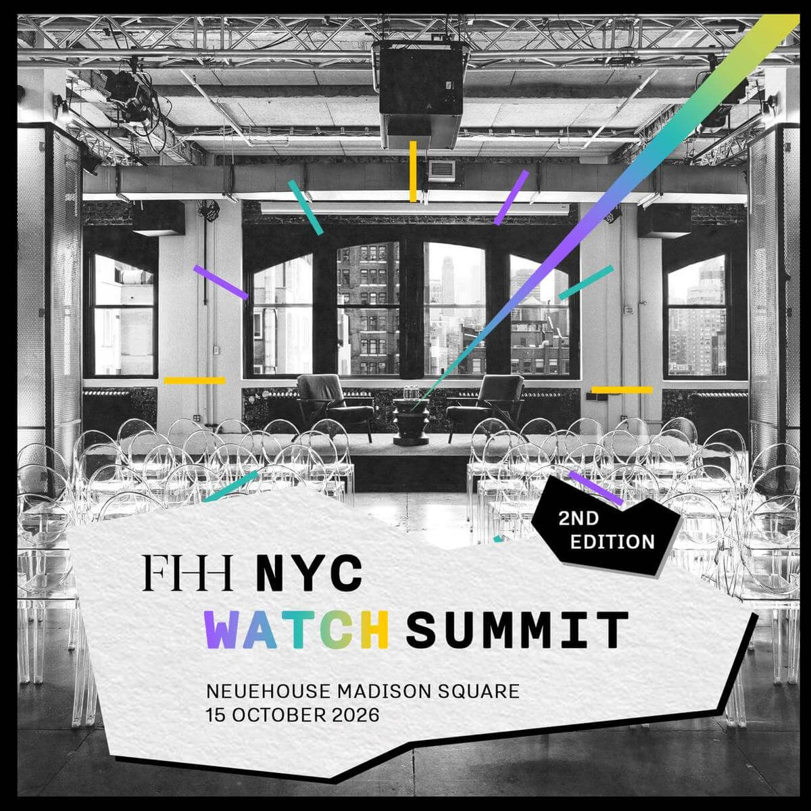
The Watch Summit is a one-day event hosted by the Fondation de la Haute Horlogerie. This is the second edition, and it runs from the afternoon into the evening at Neuehouse Madison Square.
The day is built around four panel discussions covering education in watchmaking, what makes a watch an icon, how people value watches now, and whether the strength of the US market can hold. Speakers come from Hodinkee, GQ, Robb Report, Richemont North America and Breitling USA, among others. A networking cocktail closes the evening. Admission is free but you need to register in advance.
WatchTime New York
Date: 16-18 October 2026
Website: watchtimeevents.com
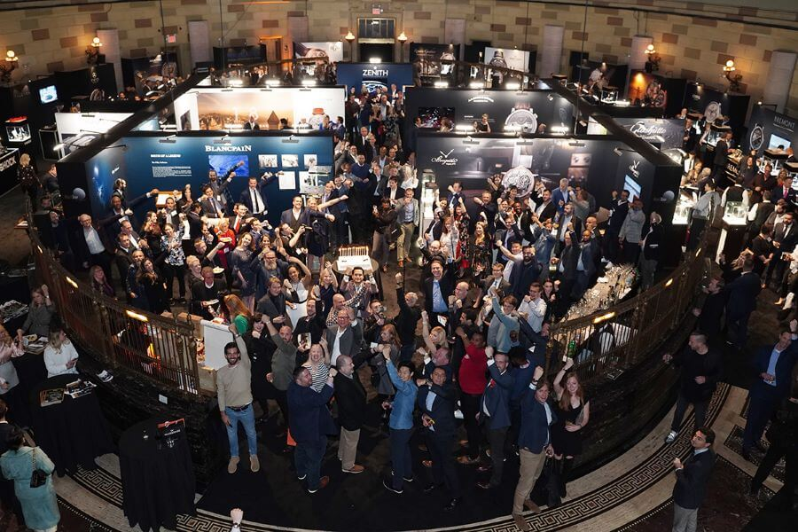
WatchTime New York is an annual luxury watch event organized by WatchTime magazine in New York City. It features exhibitions, workshops, seminars, and presentations from over 30 watch brands. Attendees, including collectors, enthusiasts, and industry professionals, can discover and experience some of the latest luxury watches from around the world.
The event also includes opportunities to meet with watchmakers, participate in interactive demonstrations, and attend educational sessions. The event is typically held over two days and attracts watch enthusiasts from all over the world.
WatchTime Düsseldorf
Date: 23-25 October 2026
Location: Rheinterrasse Düsseldorf, Joseph-Beuys-Ufer 33, Germany
Website: watchtime.net/watchtime-show
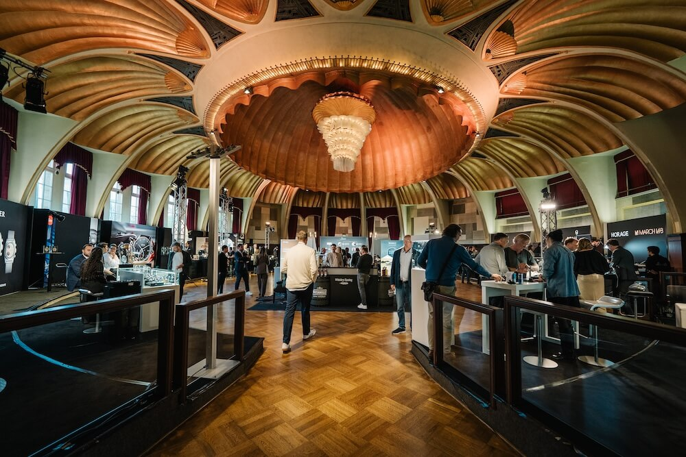
WatchTime Düsseldorf is the German edition of the WatchTime shows, organised by WatchTime Germany. Over 70 brands and independent watchmakers show their latest pieces across three days at the Rheinterrasse on the Rhine.
Alongside the stands there are watchmaking workshops run by the Deutsche Gesellschaft für Chronometrie, guided tours with the WatchTime editors, stage talks, and services for your own watch such as timing checks and demagnetising. The WatchTime Award is handed out on the opening evening, with winners picked by a jury and a public vote. Workshop and tour places are limited and need booking.
Manchester Watch Show
Date: 7 November 2026
Location: The Bridgewater Hall, Manchester, UK
Website: thewatchcollectorsclub.com
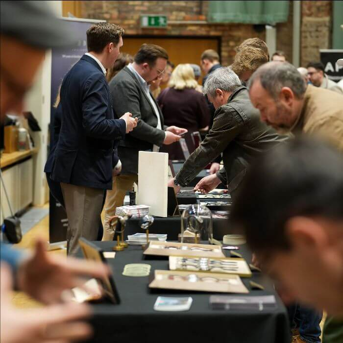
The Manchester Watch Show is run by The Watch Collectors' Club and is their flagship event, now at the Bridgewater Hall in the city centre. Around 40 brands from across Europe exhibit for the day, including Bamford London, Farer, Formex, Baltic, Doxa, Furlan Marri and Studio Underd0g.
You can try the watches on, talk to the founders and designers, and meet other collectors. Auction house Lyon & Turnbull sponsor the 2026 show and will have experts on hand if you want a vintage or pre-owned watch appraised. There is usually a pre-show meetup at a city centre bar the evening before.
Minutes + Hours Austin
Date: 7-8 November 2026
Location: Austin, Texas
Website: minutesandhours.com
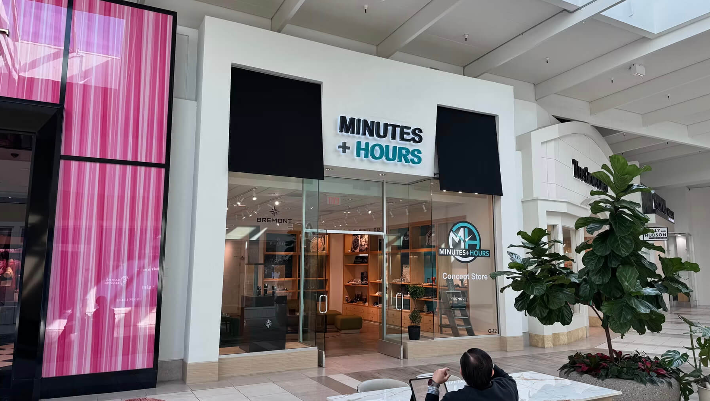
Minutes + Hours was started by collector Rich Park and grew from small gatherings in Los Angeles into one of the better known watch shows in America, with Austin and Chicago as the anchor events.
The shows are kept small on purpose. Rather than a huge hall, the format is closer to a room where you can spend time with each brand and actually talk to the people behind them. Recent Austin editions have drawn over 1,000 visitors and 60 brands, with cars, art and side events from bigger names added around the main show.
Golden Hour by Delugs
Hong Kong: 7-8 November 2026, Central Building
Singapore: 13-15 November 2026, Raffles Hotel
Website: goldenhour.delugs.com

Golden Hour is an independent watch fair run by Singapore strap maker Delugs. It grew out of the single-brand events they had been hosting in their boutiques, with the difference that here all the brands are in the room at the same time.
Both stops are open to the public, and you can try the watches on, meet the founders, and buy on the spot. The Hong Kong list includes Anoma, Atelier Wen, Echo/Neutra, Formex, Furlan Marri, Maen, Ophion and Straum. Singapore adds Baltic, Czapek, Nivada Grenchen, SpaceOne, Kuoe and more. There is also a display-only section with pieces from Grönefeld, J.N. Shapiro, Romain Gauthier and Simon Brette. I wrote more about it here.
IAMWATCH
Date: 12-15 November 2026 (public days 13-15)
Location: The Singapore Edition hotel, Singapore
Website: iamwatch.com
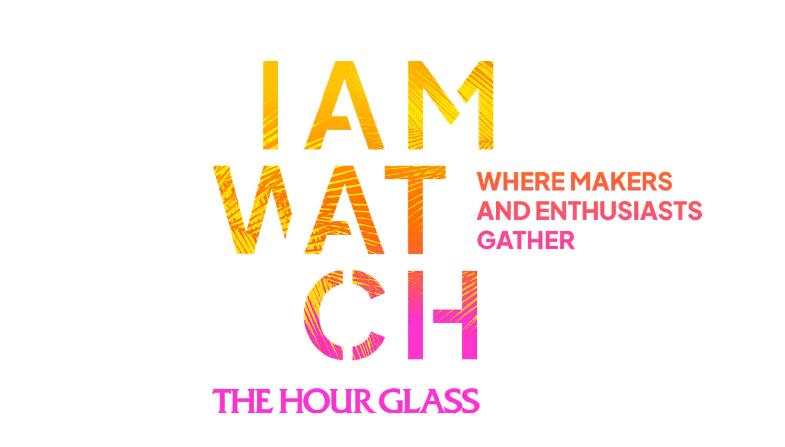
IAMWATCH is run by Singapore retailer The Hour Glass and is built around independent watchmaking. The first edition was in 2024 and brought in makers such as Kari Voutilainen, Urwerk, Rexhep Rexhepi, Raúl Pagès and Florian Bédat, along with industry figures like Aurel Bacs, Jean Arnault and Max Büsser.
The 2026 edition is bigger again, with more makers taking part. It looks to be settling into a format every two years, similar to Dubai Watch Week. Entry is free and open to the public, but you need to register beforehand.
Spring Sprang Sprung
Date: 14-15 November 2026
Location: Singapore
Website: spring-sprang-sprung.com
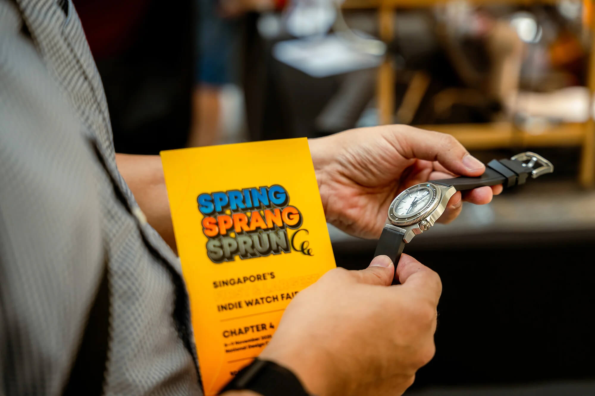
Spring Sprang Sprung, or SPRG, is Singapore's microbrand fair. It was founded by Sugiharto Kusumadi of Red Army Watches and Yong Keong Lim of Feynman Timekeepers, and has grown from 22 brands in its first year to well over 50.
The exhibitor list is mostly independents and microbrands from around the world, with a few larger names like Oris and Nivada Grenchen mixed in, plus strap and accessory makers. There are also talks and hands-on workshops, including leather crafting. The founders describe it as casual and open to anyone, whether you collect or are just curious.
Micro Praha
Date: 29-30 November 2026
Website: micropraha.com
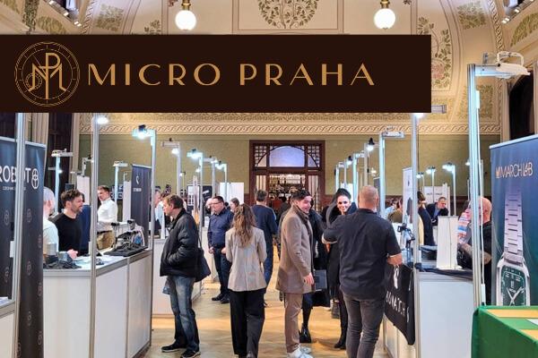
Micro Praha is a festival dedicated to the art and innovation of independent watchmaking. The event is founded by veteran enthusiasts Bhanu Chopra and Ondrej Vislocký. Their mission is to provide a platform for passionate "microbrands" from around the world to connect with enthusiasts in Prague and Central Europe.
The festival offers guests an opportunity to discover and acquire unique watches not commonly available in the region, meet the creators behind the brands, and immerse themselves in a vibrant community of watch lovers.
Only Watch
Date: next one is in 2027
Website: www.onlywatch.com
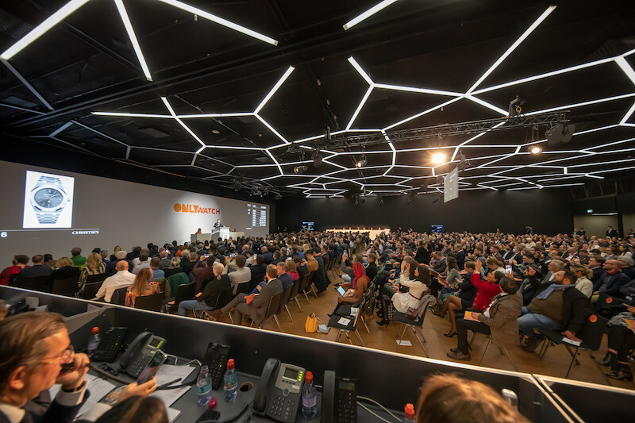
Only Watch is a biennial event that auctions off one-of-a-kind timepieces to raise funds for research on Duchenne Muscular Dystrophy (DMD), a genetic disease that primarily affects boys.
Under the high patronage of H.S.H. Prince Albert II of Monaco, the Association Monégasque contre les Myopathies (AMM) has raised nearly CHF/EUR 100 million to fund research on neuromuscular diseases.
Only Watch funds have supported an international network of public and private laboratories focused on developing new therapeutic approaches, such as gene therapy and cell therapy. The organization has financed more than 50 researchers globally and created two biotech organizations to ensure independent research projects. One of these organizations is currently preparing a clinical trial on a drug financed entirely by Only Watch funds.
Grand Prix d'Horlogerie de Genève (GPHG)
Date: 10 October 2026
Website: www.gphg.org
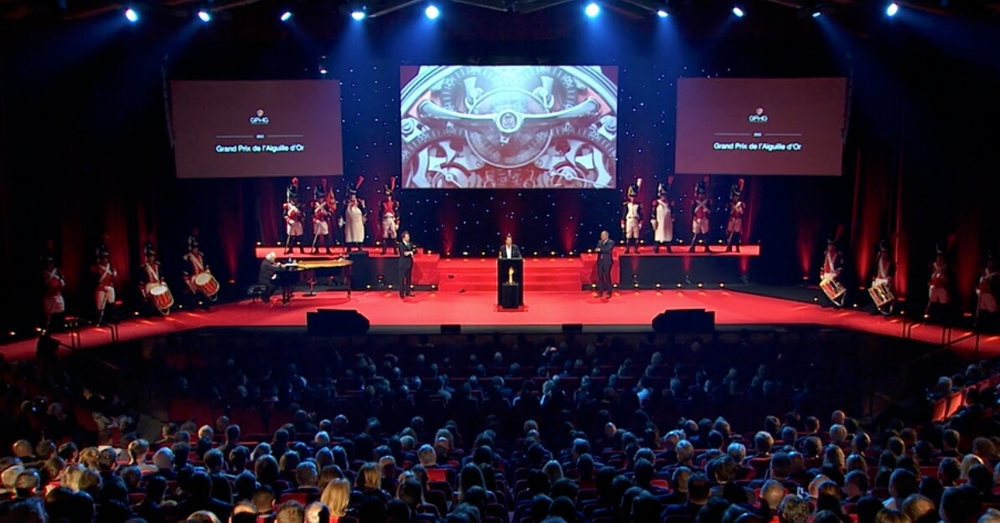
The Foundation of the Grand Prix d'Horlogerie de Genève (GPHG) was established in 2011 to promote watchmaking and its values worldwide. The foundation organizes an annual event called the Grand Prix d'Horlogerie de Genève (GPHG) to reward the finest creations and operators in the watchmaking sector. The jury consists of leaders of watch brands and recognized experts in the field.
The watches pre-selected for the GPHG, as well as the winners, take part in a travelling exhibition held in October and November in countries with high interest in the watch market.
Dubai Watch Week
Date: next edition is in 2027
Website: dubaiwatchweek.com
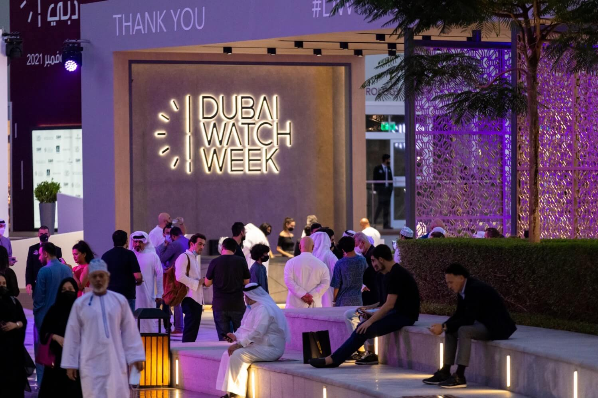
Dubai Watch Week is an annual event organized by Ahmed Seddiqi & Sons, a luxury watch retailer in Dubai, UAE. The event celebrates the art of horology and watchmaking through exhibitions, workshops, and talks by industry leaders.
Its aim is to promote education, innovation, and creativity in the watch industry and to foster a greater appreciation for the art and science of horology. The event provides a platform for watch enthusiasts and professionals to connect and share their knowledge and experience the latest innovations and trends in watchmaking.
HSNY lectures
Date: See the updated schedule
Website: hs-ny.org
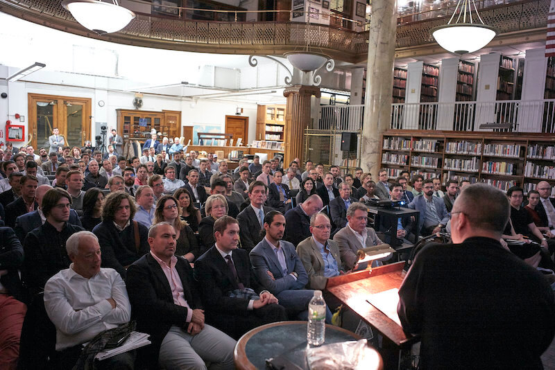
The Horological Society of New York (HSNY) is a non-profit organization that was established in 1866, making it the oldest continuously operating horological association in the United States and one of the oldest in the world.
The HSNY's mission is to advance the art and science of horology by providing education, training, and support to watchmakers and enthusiasts. The society offers various programs such as classes, workshops, lectures, seminars, a library, and a museum containing rare and historical timepieces. The HSNY is respected in the watchmaking community and is committed to promoting appreciation and understanding of horology.